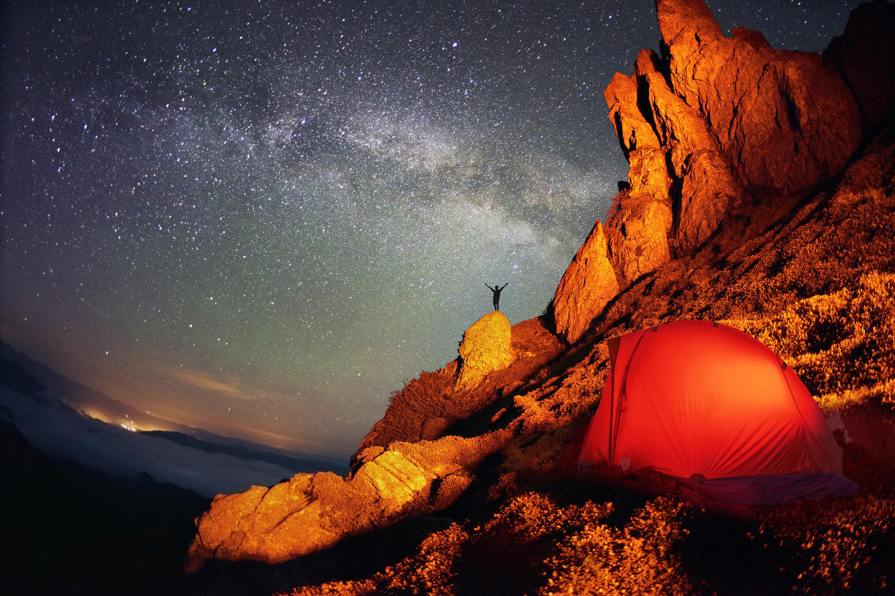
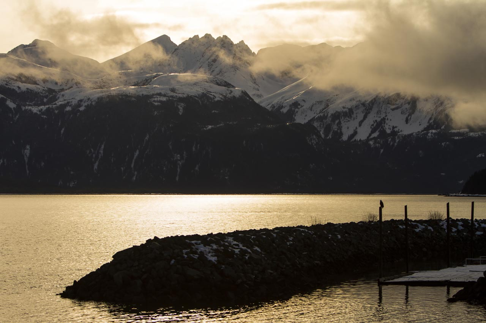
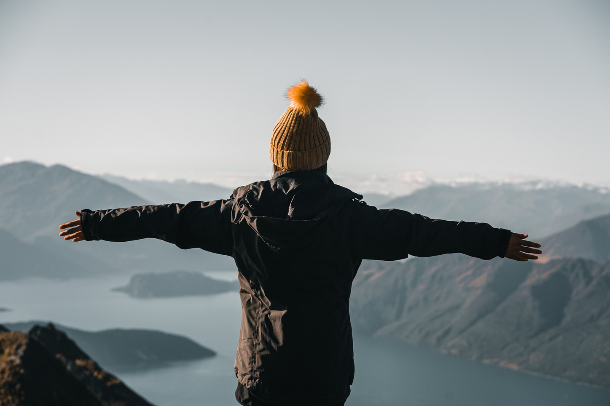
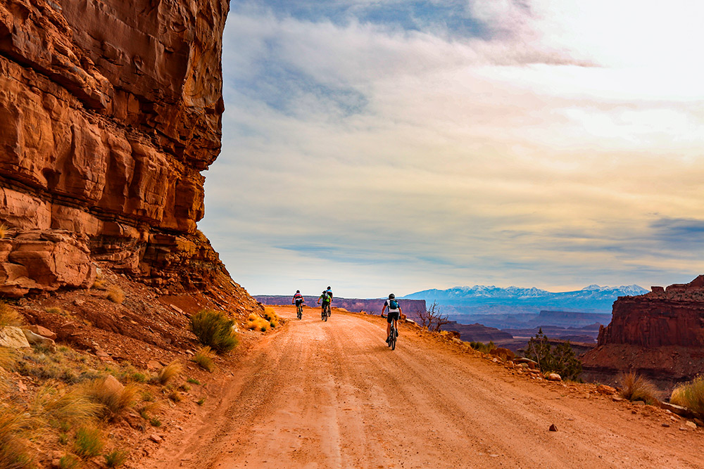

Expedition · Americas · Hiking
W Circuit: 9 Days, 115 km, One Life-Changing Walk
Jordan M. & Morgan L. · February 2026 · 12 min read
Expedition · Americas · Hiking
Jordan M. & Morgan L. · February 2026 · 12 min read
We planned this trip for eleven months. We packed our bags the week before departure, repacked them the day before, and still got things wrong. The W Circuit through Torres del Paine National Park is one of the most famous multi-day treks in the world, and the reputation is deserved — but the version in the glossy travel supplements is missing about forty percent of the story. This is the rest of it.
The bus from Puerto Natales takes roughly three hours to reach the park boundary. On a clear day you can see the towers from the road, three granite spires that seem to belong to a different planet. We arrived to drizzle and low cloud, which the ranger at the gate found amusing. "November," she said. "Perfect timing." She did not mean it sarcastically, which was somehow worse.
We started from Laguna Amarga and walked west toward Campamento Torres. The trail is well-marked. Too well-marked. The sheer volume of trekkers on the first two sections caught us off guard — the W Circuit draws close to eighty thousand visitors a year, and you feel it on the main arteries. This is not wilderness solitude. It is something else: a shared experience of difficult terrain and unreliable weather and spectacular landscape, conducted with strangers from thirty-two countries.
Day two was the mirador climb. Four hours up to see the towers at sunrise, if the cloud lifts. We left camp at 4:30 a.m. The cloud did not fully lift. What we saw was the towers appearing and disappearing through moving mist, which — honestly — was better than the postcard version.
Patagonian wind is not weather. It is a physical condition of the place. On day three, crossing the exposed ridge section above Valle del Francés, the gusts hit around 80 km/h by our estimation — though "estimation" is generous since neither of us has ever stood in 80 km/h wind before and it seemed faster. Morgan's trekking pole went sideways. We leaned into it and kept moving, one step at a time, not because it was dramatic but because stopping was not an option and turning back would have added six kilometers.
"By day four we had stopped asking when it would stop raining. The question had become whether we still cared."
The French Valley itself is one of the most extraordinary places either of us has ever stood. Glaciers calving off the north face of the massif, ice chunks detonating into the lake below. The sound arrives two seconds after the visual. You watch it happen and then the sound finds you, and it registers somewhere below language.
The sleeping bag failed on night five. Not dramatically — no catastrophic failure — but the zip pull came off and we spent twenty minutes in a dark tent with a headlamp trying to lace a piece of cord through the zipper housing. We got it working. The lesson: test every zip, clasp, and buckle before you leave home. The backcountry is not where you want to discover that something doesn't work.
Grey Glacier is the western terminus of the W, and reaching it felt like arriving at a different world. The ice is ancient blue, fractured, indifferent. We sat by the lake for an hour and watched chunks the size of small buildings float quietly toward us. There's a moral in there somewhere about patience and perspective. We ate crackers and didn't try to name it.
The return along the southern shore of Lago Grey is a deceptively long day — flat-looking on the map, interminable on foot. But the wildlife compensates. We watched a condor work thermals directly overhead for close to twenty minutes, wings fixed, barely moving. Guanacos grazed within twenty meters of the trail without acknowledging us. A pair of Andean foxes crossed the path at dusk on day eight and paused long enough that it felt deliberate.
Day nine was the walk out. We were tired in the specific way that multi-day hiking tires you — not exhausted, but emptied in a way that feels useful. The bus back to Puerto Natales smelled of wet gear and other people's boots, and it was one of the best bus rides of my life.
It rained on six of nine days. We had one full clear day (day two, ironically, when we were below treeline). The wind was constant. Temperatures ranged from 4°C at night to 17°C at midday. This is typical for November, which is considered shoulder season. The weather is the point. You don't go to Patagonia despite the conditions. You go because of them. Bring every waterproof layer you own.
CONAF has been managing the W Circuit through a reservation and permit system since the early 2020s, and it is more structured than most online resources indicate. Refugios along the route must be booked in advance, and the most popular nights — Refugio Chileno before the Torres mirador climb, and Refugio Grey for the glacier day — sell out months ahead in high season. We booked in April for a November trip. When we arrived, three people at the park gate had no reservation and were turned around.
The booking system (through the Torres del Paine official portal) is not difficult but it requires a consistent internet connection during the checkout process, which failed twice before we completed it. Book on a desktop computer, not a phone. Have your passport numbers for all trekkers ready before you start. The system times out. The credit card processing is slow. Budget a full evening for it and don't start at 11 p.m.
Independent camping is available at designated sites for trekkers who prefer tents to refugios. The sites are marked on the official park map and include the legendary Campamento Torres. Be aware that the weather can compromise a tent in ways that a refugio cannot — on night six, in 60 km/h gusts near Grey Glacier, our dome tent inverted twice despite proper staking. Bring a bomber shelter, not your ultralight summer setup.

One clear night in nine days. The Patagonian sky has its own schedule.
"The condor worked the thermals for twenty minutes above us and didn't once acknowledge we were there. That felt like the right relationship."
— Jordan M. & Morgan L.

The park is vast enough to swallow eighty thousand visitors a year without ever looking crowded from a ridgeline.

Essay
The camera as creative tool and physical burden. A landmark essay on shooting in the high mountains.

Gear Guide
What to cut, what to keep, and what the ultralight obsession reveals about how we think about wilderness.

Desert
After three weeks in the Sonoran: the real lessons from moving through extreme heat.